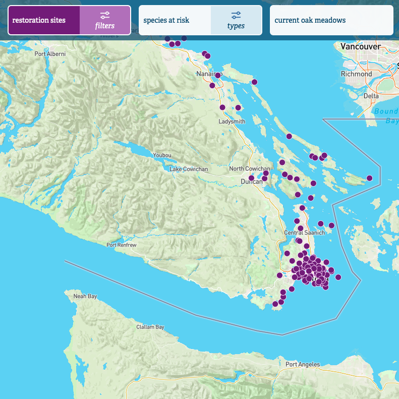

Treasure Hunt >
In this UI/UX project, I developed an interactive mockup of a web application aimed at simplifying the process of comparing prices of Magic: The Gathering (MTG) cards across various game stores in Canada. The website would provide MTG players with a user-friendly interface to quickly find the best deals and make informed purchasing decisions, a process which can otherwise take a significant length of time.
The project included extensive research, user interviews, surveys, and several rounds of usability testing. This user-centered approach ensured that the final mockup met the needs and preferences of the target audience.
Ecosystem Map >
In this project, I built a webmap showcasing ecological restoration projects in Garry Oak ecosystems on Vancouver Island. Leveraging the Mapbox API, I developed a visually appealing and interactive map that allowed users to filter the data and toggle between different map layers. The webmap served as a comprehensive resource for individuals interested in Garry Oak restoration efforts, providing valuable information on project locations, status, methods, and other details.
